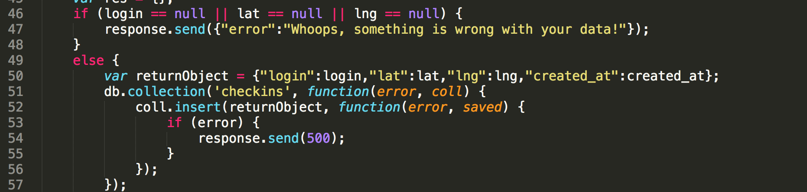

I was instructed to find security and privacy flaws in a web server created by Sinclair Meggit. This server uses the frameworks express and node.js to handle both GET and POST requests from a web application. This web application sends the server a) the users's login, b) the user's latitute, and c) the user's longitude. The server stores these strings in a database. The server also sends back all stored checkins, along with a list of landmarks nearby. The server also sends back all data pertaining to a particular login.
I found security vulnerabilities in this server by using curl, and by simply reading the code.
I found three security and privacy issues in this server:
This server accepts input from the user, namely a login, latitute and longitude. However, the server does nothing to validate this input, meaning that the user can insert Javascript code that redirects the web application to another (potentially malicious) website.
By requesting data for all logins but the user's own login, the user is able to view data belonging to others. This is a privacy vulnerability.
This is a cross-site scripting (XSS) issue
Lines 46-54 in the Post/sendLocation Route
This code shows the server checks that the login, latitude and longitude are not "null" before inserting them in the database, but does not check that none of the strings includes Javascript.
This is a very severe issue becuase this flaw enables hackers to direct users to any webpage in the world, including malicious ones that might try to steal the users' data for nefarious purposes.
I found this issue using curl. Curl allowed me to send Javascript to the server, rather than a legitimate login:
The screenshot above shows that the server accepted the Javascript in place of the login and put it in the database, because it responded with a legitimate JSON response, instead of "Whoops! Something is wrong with your data!"
All user input should be stripped of javascript tags before being inserted into the database:

This is an injection attack.
This vulnerability appears in the "/checkins.json" route (lines 88-104).
Privacy is definitely extremely important and users should not have access to other users' data, but this privacy vulnerability doesn't give users access to much more data than they would have already, even if this flaw were mended. With the vulnerable "/checkins.json" route, a user can see everyone's ID, login, latitude, longitude, and date of checkin. With the default "/" route, users can all this information except the ID, and this is when this route is functioning properly. Therefore, this flaw in the "/checkins.json" route only gives users access to one more piece of data than they would otherwise have, so I designate this flaw to be of medium severity.
I found this issue by reading the code and noticing that there is no code that stops a user from accessing the checkins data of other users. I managed to access data from all users but myself with a modified query string:
The below screenshot shows how user with login "fred" could view all other users' data by mangling the query string:
This security flaw could be mended by changing stripping special characters, such as "$" , from the query string:
1. Screenshot in Section 4, Issue 1, "Resolution" comes from Stack Overflow.